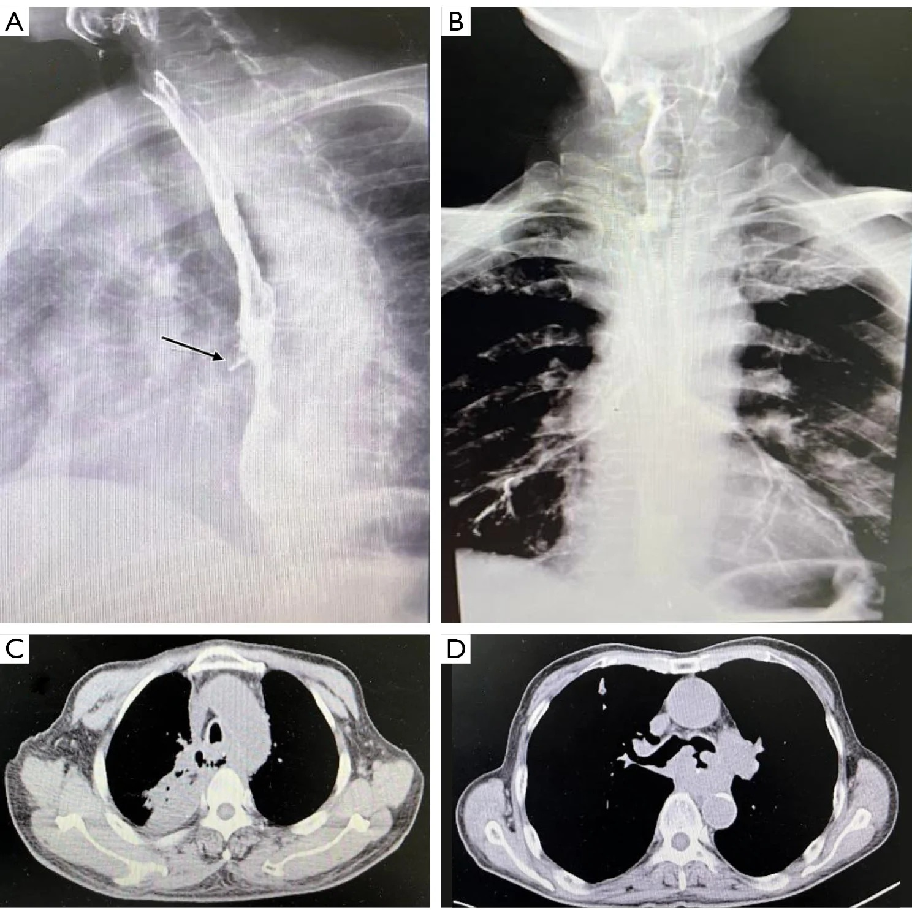
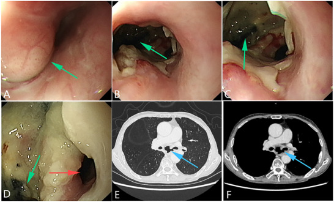
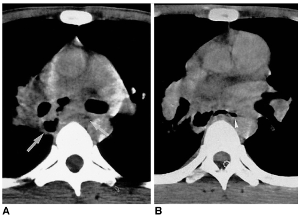

1844 — Rò và hoại tử thực quản do xạ (radiation-induced esophageal perforation / fistula)
Tags: pattern:ro-thuc-quan pattern:khi-trung-that pattern:o-khi-dich-trung-that pattern:ton-thuong-trong-truong-chieu vung:trung-that vung:thuc-quan protocol:chup-can-quang-thuc-quan protocol:CT-nguc-cang-quang protocol:noi-soi-thuc-quan score:CTCAE score:BED
Mức chắc chắn (certainty): tổng hợp y văn (literature synthesis) — 1 đoàn hệ 91 bệnh nhân rò thực quản sau xạ (PMC13655807, có ảnh cản quang + CT của rò trung thất và rò khí–thực quản), 1 đoàn hệ 171 bệnh nhân VMAT (PMC11662626), 1 đoàn hệ 21 ca xạ lại SBRT (PMC11139739 — ngưỡng liều thực quản), 1 tổng quan TEF (PMC12499430, CC BY) và 1 loạt ca hình ảnh (PMC2713885). Không có thử nghiệm ngẫu nhiên; mọi ngưỡng liều là dữ liệu hồi cứu.
Câu chốt: rò thực quản sau hóa–xạ là cấp cứu nhiễm khuẩn trung thất, không phải "viêm thực quản nặng". Ba số phải thuộc: 5,8–30,1% bệnh nhân ung thư thực quản hóa–xạ có rò; trung vị sống sau rò chỉ 3,1 tháng (sống 3 tháng 51,6%, 6 tháng 18,7%, 12 tháng 5,5%); và xạ lại là yếu tố tiên lượng xấu độc lập (HR 2,39; 95% CI 1,33–4,29). Câu hỏi hình ảnh không phải "có viêm không" mà là "cản quang/khí có thoát ra ngoài lòng thực quản không, và thoát vào đâu".
1. Tổng quan bệnh học – cơ chế hình ảnh (TẠI SAO)
1.1 Cơ chế: u teo đi nhanh hơn mô lành kịp sửa
- Hóa–xạ diệt tế bào u nhanh, nhưng mô lành (niêm mạc, dưới niêm, cơ) không kịp tái tạo → vùng u cũ trở thành chỗ yếu nhất của thành thực quản. Khi u co lại, thành mỏng đi và thủng — thường trong hoặc ngay sau đợt xạ, tại nơi nhận liều cao nhất.
- Thiếu máu vi mạch do xạ làm giảm khả năng lành: nội mô tổn thương → huyết khối nhỏ → thành thực quản hoại tử từng phần, niêm mạc loét, viêm trung thất. Đây là lý do rò có thể xuất hiện muộn, sau khi u đã đáp ứng hoàn toàn.
- Vị trí hay gặp: đoạn thực quản ngang mức u và liều cao nhất, sát khí quản/phế quản gốc (→ rò khí–thực quản, TEF) hoặc trung thất (→ rò thực quản–trung thất, EMF); nếu sát động mạch chủ → rò thực quản–động mạch chủ, thường tử vong.
- Phân loại theo đường rò: EMF (esophagomediastinal fistula — thực quản ↔ trung thất) và TEF (tracheoesophageal fistula — thực quản ↔ khí quản/phế quản). TEF gây sặc, viêm phổi hít sặc, suy hô hấp; EMF gây viêm trung thất, áp-xe, nhiễm khuẩn huyết.
1.2 Vì sao hình ảnh phải "nhìn thấy thuốc đi sai đường"
- Cản quang thực quản (esophagogram): dùng thuốc cản quang tan trong nước (Gastrografin/iodine) — nếu có rò, thuốc thoát ra ngoài lòng thành đường rò (tract) hoặc ổ trong trung thất. Đây là chuẩn vàng tại giường vì trực tiếp chứng minh lỗ thông; độ nhạy cao với rò đủ lớn.
- CT ngực có cản quang tĩnh mạch + uống cản quang: thấy khí trong trung thất, ổ khí–dịch cạnh thực quản, dày thành thực quản, tràn dịch/tràn khí màng phổi, đông đặc phổi do hít sặc, và mất liên tục thành thực quản. CT cũng cho biết u còn hay không, stent, và tương quan với động mạch chủ — điều mà cản quang đơn thuần không trả lời.
- Nội soi thực quản: thấy lỗ rò, niêm mạc trắng bợt/hoại tử, lấy mô loại trừ u; nhưng bơm hơi có thể làm rò to hơn hoặc gây tràn khí áp lực → dùng CO₂, bơm tối thiểu, chỉ khi đã có kế hoạch xử trí.
- TẠI SAO khí trung thất không đặc hiệu: khí có thể từ nội soi, thở máy, chấn thương, barotrauma; chỉ có giá trị khi kèm cản quang thoát ra hoặc ổ khí–dịch sát thực quản ở đúng vùng xạ.
1.3 Ngưỡng định lượng trụ cột
a) Dịch tễ và tiên lượng (PMC13655807 — 91 bệnh nhân rò sau xạ):
| Biến số | Số liệu |
|---|---|
| Tỷ lệ rò sau hóa–xạ ung thư thực quản | 5,8–30,1% |
| Trung vị sống sau rò | 3,1 tháng |
| Sống 3 / 6 / 12 tháng | 51,6% / 18,7% / 5,5% |
| Xạ lại (có vs không) — đa biến | HR 2,39 (95% CI 1,33–4,29), p = 0,004 |
| Rò không đóng (persistent fistula) | yếu tố tiên lượng xấu độc lập |
| Hemoglobin < 120 g/L | yếu tố tiên lượng xấu độc lập |
| Dinh dưỡng: mở dạ dày/jejunostomy | sống sau rò tốt nhất (3 tháng 83,3%, 6 tháng 41,7%, 12 tháng 25,0%) |
- Liều xạ: trong đoàn hệ, tổng liều 5,4–70 Gy ở nhóm rò sau xạ lần đầu; 79,8–120 Gy ở nhóm rò sau xạ lại. Liều ≥ 60 Gy có xu hướng tăng nguy cơ (HR 1,45; 95% CI 0,92–2,28 — chưa đạt ý nghĩa thống kê trong mô hình đa biến).
b) Yếu tố nguy cơ trên 171 bệnh nhân VMAT (PMC11662626):
- Rò thực quản 12,87% (22/171).
- Yếu tố độc lập: giới, tuổi, đái tháo đường, T4, tổng liều xạ; mô hình dự báo AUC 0,876 (95% CI 0,807–0,946).
- T4 là yếu tố giải phẫu mạnh: u xâm lấn trung thất/khí quản thì thành thực quản đã mỏng trước khi xạ.
c) Ngưỡng liều thực quản khi lập kế hoạch:
- Ràng buộc chung (CORSAIR 2022, PMC9600677): Dmean < 34 Gy; V35 Gy < 50%; V50 Gy < 40%; V70 Gy < 20%.
- Xạ lại SBRT cột sống (PMC11139739): cộng dồn theo BED Gy3 — Dmax < 203, D0,035cc < 187, D1cc < 167; vượt ngưỡng này đã có 1 ca tử vong do rò thực quản.
- Liều xạ triệt căn ung thư thực quản thường 50,4 Gy (ESMO); tăng liều không cải thiện sống sót (RTOG 90-12) nhưng tăng độc tính.
2. Mẫu hình + chẩn đoán phân biệt theo vị trí (Gamut)
- Rò vào trung thất (EMF): khí + dịch trung thất sau, ổ khí–dịch sát thực quản, tràn dịch màng phổi, sốt–đau ngực–khó thở sau ăn. Gamut: rò do xạ · thủng do u · Boerhaave · thủng do nội soi/stent · rò do lao/áp-xe trung thất.
- Rò vào khí quản/phế quản (TEF): sặc khi uống, ho ra nước/ thức ăn, viêm phổi hít sặc tái diễn, khí trong thực quản và cản quang vào cây khí phế quản. Gamut: rò do xạ · xâm lấn u · rò do ống nội khí quản/bóng cuff · rò sau mổ · rò bẩm sinh ở trẻ.
- Rò vào động mạch chủ (aortoesophageal): "herald bleed" — nôn ra máu nhỏ rồi chảy máu ồ ạt; CTA thấy giả phình/loét xuyên thành động mạch chủ sát thực quản. Đây là tối cấp cứu, không chờ nội soi.
- Hình dạng gợi ý do xạ: vị trí trong trường chiếu, ngang mức u/liều cao, xuất hiện trong hoặc 1–6 tháng sau hóa–xạ, kèm hẹp/lan tỏa thành thực quản; không có khối mới xâm lấn.
3. Bảng so sánh phân biệt (ma trận đối chiếu)
| Thực thể (entity) | Hình ảnh điển hình | Chốt vào (rule-in) | Chốt loại (rule-out) | Gợi ý xác nhận |
|---|---|---|---|---|
| Rò thực quản–trung thất do xạ (EMF) | Cản quang thoát ra trung thất; khí + ổ dịch cạnh thực quản; tràn dịch màng phổi; thành thực quản dày, không khối mới | Cản quang ngoài lòng + vị trí trong trường xạ + không khối u mới | Khối u xâm lấn rõ, phá xương/khí quản → nghĩ u | Cản quang nước hòa tan + CT ngực có cản quang |
| Rò khí–thực quản (TEF) | Cản quang vào khí quản/phế quản, khí trong thực quản, đông đặc phổi do sặc; CT thấy đường thông | Sặc khi uống + cản quang/khí vào cây khí phế quản | Không thấy đường thông, chỉ viêm phổi một thùy → chưa chốt | Nội soi khí–thực quản, CT lát mỏng |
| U xâm lấn gây rò | Khối u lớn, bờ không đều, hẹp lòng, hạch hoại tử; rò ở bờ u | Khối u còn rõ + hạch + rò tại chỗ u | Niêm mạc trắng bợt lan tỏa, không khối → nghĩ xạ | Nội soi + sinh thiết (cẩn thận), PET/CT |
| Rò sau mổ thực quản | Rò tại miệng nối, sau mổ 5–10 ngày; ổ dịch/miệng nối | Tiền sử mổ + rò tại miệng nối | Không mổ, rò ngang mức u đã xạ → nghĩ xạ | Cản quang cạnh miệng nối, CT |
| Boerhaave (vỡ tự phát) | Vỡ thành trái đoạn 1/3 dưới, tràn khí–dịch trung thất, dấu Macklin | Nôn dữ dội rồi đau ngực đột ngột + tràn khí trung thất | Tiền sử xạ, không nôn → nghĩ rò do xạ/u | CT ngực cấp cứu, cản quang |
| Rò thực quản–động mạch chủ | Giả phình/loét xuyên thành ĐMC sát thực quản; máu trong trung thất | Herald bleed + CTA có tổn thương ĐMC | Không có tổn thương ĐMC → loại trừ | CTA ngực khẩn |
| Rò do lao/áp-xe trung thất | Hạch trung thất hoại tử có khí, khí trong hạch thông với thực quản | Hạch hoại tử + khí trong hạch + bối cảnh lao/HIV | Trường xạ đúng vùng, không hạch hoại tử → nghĩ xạ | CT, xét nghiệm lao, nội soi |

(A) Cản quang: thuốc thoát qua đường rò vào trung thất (mũi tên). (B) Cản quang: rò vào khí quản. (C) CT: khí/dịch trung thất cạnh thực quản. (D) CT: khí trong trung thất và đường thông về phía khí quản. Nguồn: J Thorac Dis 2026; Fig. 1 — PMC13655807, CC BY-NC-ND (nguyên bản, không crop).4. Protocol chụp + hệ phân độ/ngưỡng xử trí
4.1 Thứ tự chẩn đoán (quan trọng hơn thông số)
- Cản quang thực quản bằng thuốc tan trong nước trước — chứng minh rò và đường thoát. Không dùng barium đầu tiên nếu nghi rò: barium trong trung thất gây viêm trung thất hóa học và rất khó rửa.
- CT ngực có cản quang tĩnh mạch + uống cản quang, lát 1–1,5 mm, cửa sổ trung thất + phổi: đánh giá ổ khí–dịch, trung thất, màng phổi, phổi, động mạch chủ, stent.
- Nội soi khi cần xác định vị trí/kích thước, lấy mô, đặt stent — dùng CO₂, bơm tối thiểu.
- CTA ngực ngay nếu có ho ra máu/herald bleed hoặc tổn thương sát động mạch chủ.
4.2 Phân độ và xử trí
- CTCAE v5: viêm thực quản độ 3 (nuốt đau, không ăn được), độ 4 (đe dọa tính mạng), rò thực quản xếp độ 4–5.
- Nguyên tắc xử trí: dinh dưỡng trước tiên (mở dạ dày/jejunostomy được ưu tiên vì sống sau rò tốt nhất trong đoàn hệ), kháng sinh phổ rộng, dẫn lưu ổ trung thất/màng phổi khi có mủ, stent có màng che lỗ rò (TEF) để giảm sặc, mổ chỉ ở ca chọn lọc (u còn kiểm soát, rò lớn, thất bại nội soi). Xạ lại làm tiên lượng xấu hơn rõ rệt.
flowchart TD
A[Nghi rò thực quản sau xạ] --> B[Cản quang nước hòa tan + CT ngực cản quang]
B --> C{Có thoát cản quang hoặc khí-dịch cạnh thực quản?}
C -->|Không| D[Theo dõi, lặp cản quang nếu triệu chứng tiếp diễn]
C -->|Có| E{Đường rò vào đâu?}
E -->|Trung thất| F[Dẫn lưu + kháng sinh + nuôi ăn qua mở dạ dày]
E -->|Khí quản| G[Stent có màng + nuôi ăn + kháng sinh]
E -->|Động mạch chủ| H[CTA khẩn + TEVAR hoặc can thiệp]
F --> I[Theo dõi đóng rò và dinh dưỡng]
G --> I
4.3 Theo dõi sau rò
- Cản quang kiểm tra sau 7–14 ngày nếu đã can thiệp; CT nếu sốt dai dẳng (áp-xe tồn dư).
- Theo dõi cân nặng, albumin, hemoglobin (Hb < 120 g/L là yếu tố tiên lượng xấu); không rút stent trước khi kiểm tra đóng rò.

(A) Trước xạ: u phổi chèn ép, niêm mạc còn nguyên. (B–D) 2,5 tháng sau xạ: lỗ rò (mũi tên xanh), niêm mạc trắng bợt. (E–F) CT: đường thông giữa thực quản và khí quản. Nguồn: Li G et al.; Adv Sci 2025; Fig. 5 — PMC12499430, CC BY.5. Biến thể bình thường và cạm bẫy
- Khí trung thất sau nội soi/thở máy không phải rò — đừng chẩn đoán nếu không có cản quang thoát ra hoặc ổ dịch sát thực quản.
- Barium đầu tiên khi nghi rò là sai lầm: gây viêm trung thất hóa học, khó lấy — luôn bắt đầu bằng thuốc tan trong nước.
- Viêm thực quản do xạ (niêm mạc phù, loét nông, hẹp) có thể bắt chước rò trên CT; cần cản quang/nội soi.
- Rò nhỏ bị bỏ sót trên CT (không thấy đường thông): nếu lâm sàng mạnh (sặc, sốt, tràn khí tái diễn) → lặp cản quang + nội soi, không loại trừ bằng một CT âm.
- "Satisfaction of search": thấy viêm phổi hít sặc rồi dừng, bỏ qua đường rò và ổ trung thất.
- Stent có màng có thể gây loét/ăn mòn và tạo rò mới hoặc làm rò ác tính nặng hơn — theo dõi nội soi định kỳ.
- Herald bleed ở bệnh nhân xạ thực quản là rò–động mạch chủ cho đến khi loại trừ — không chờ nội soi thường quy.
- Rò do lao/áp-xe trung thất (ảnh dưới) là bắt chước kinh điển: hạch hoại tử có khí thông với thực quản, không có tiền sử xạ.

CT trung thất: hạch dưới carina hoại tử chứa khí bất thường (mũi tên), thông với khí trong thực quản (đầu mũi tên) — rò thực quản–trung thất do lao, không do xạ. Nguồn: Jang KM et al.; Korean J Radiol 2002; Fig. 6 — PMC2713885, CC BY-NC.6. Tự lượng giá — Blind Quiz
Ca 1 — Nam 63 tuổi, ung thư thực quản giữa, hóa–xạ 50,4 Gy. Sốt, đau ngực sau ăn, tràn dịch màng phổi trái. Nhìn 4 ô ảnh dưới đây.
- Câu hỏi: (1) Ô A và B khác nhau thế nào? (2) Ô C và D xác nhận gì? (3) Việc đầu tiên cần làm?
Bấm để hiện đáp án (findings + chẩn đoán)
- Findings: (A) cản quang thoát ra trung thất qua đường rò (mũi tên) → EMF; (B) cản quang vào khí quản → TEF; (C) CT có khí/dịch trung thất cạnh thực quản; (D) CT có khí trung thất và đường thông.
- Chẩn đoán: rò thực quản do xạ — EMF (A, C) và TEF (B, D). Xử trí: nhịn ăn, nuôi ăn qua mở dạ dày/jejunostomy, kháng sinh phổ rộng, dẫn lưu ổ trung thất/màng phổi, stent có màng nếu TEF.
- Nguồn ảnh: J Thorac Dis 2026; Fig. 1 — PMC13655807, CC BY-NC-ND (tên tác giả không ghi vì bài không cung cấp authorString).
Ca 2 — Nữ 58 tuổi, ung thư phổi được xạ triệt căn. 2,5 tháng sau: sặc khi uống, ho ra thức ăn, viêm phổi tái diễn. Nội soi + CT:
- Câu hỏi: (1) Mũi tên xanh chỉ gì? (2) CT (E–F) cho thấy đường gì? (3) Vì sao không bơm hơi mạnh khi nội soi?
Bấm để hiện đáp án
- Findings: (A) trước xạ — u chèn ép, niêm mạc nguyên; (B–D) sau xạ 2,5 tháng — lỗ rò lớn, niêm mạc trắng bợt hoại tử; (E–F) CT — đường thông giữa thực quản và khí quản.
- Chẩn đoán: TEF do xạ. Bơm hơi mạnh có thể làm rò to hơn, gây tràn khí trung thất áp lực và đẩy dịch vào phổi → dùng CO₂, bơm tối thiểu.
- Nguồn ảnh: Li G et al.; Adv Sci 2025; Fig. 5 — PMC12499430, CC BY.
Ca 3 — Nam 27 tuổi, AIDS, sốt kéo dài, nuốt đau, không tiền sử xạ. CT trung thất:
- Câu hỏi: (1) Mô tả bất thường? (2) Chẩn đoán khác rò do xạ ở điểm nào? (3) Cần làm gì tiếp?
Bấm để hiện đáp án
- Findings: hạch dưới carina hoại tử, chứa khí bất thường (mũi tên), thông với khí trong thực quản (đầu mũi tên).
- Chẩn đoán: rò thực quản–trung thất do lao hạch — không có tiền sử xạ, có hạch hoại tử đặc trưng. Xử trí: kháng lao + dẫn lưu/kháng sinh; không đặt stent che rò trước khi kiểm soát nhiễm.
- Nguồn ảnh: Jang KM et al.; Korean J Radiol 2002; Fig. 6 — PMC2713885, CC BY-NC.
Bài liên quan chéo
- 269 – Xạ lại tủy sống: ngưỡng liều thực quản cộng dồn (BED3 Dmax < 203)
- 061 – Tràn khí trung thất (chẩn đoán phân biệt khí trung thất)
- 085 – Độc tính miễn dịch quanh mổ ung thư phổi
- 090 – Bỏng hít đường thở (tổn thương đường thở do nhiệt/hóa chất)
- 093 – Hội chứng tĩnh mạch chủ trên (biến chứng trung thất khác sau xạ/u)
- 1843 – Bệnh rễ và đám rối thần kinh do xạ (cơ quan khác trong cùng trường xạ)
Không dùng để chẩn đoán độc lập khi chưa có người hướng dẫn.